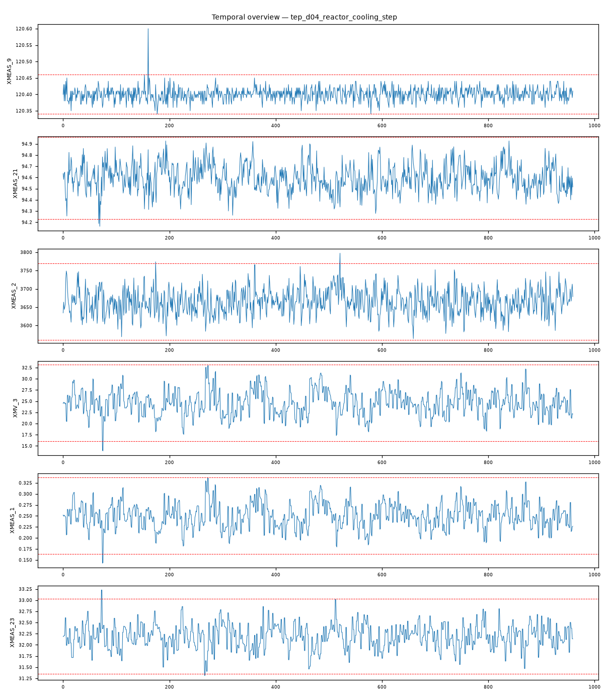

202609121509530_bench_tep_d04_reactor_cooling_step · 执行模式 zcode-direct反应器冷却侧扰动（reactor cooling disturbance）：反应器温度 XMEAS_9 以 10.06σ 主导异常列谱（次高仅 3.8σ），进料与组分通道仅轻度联动——冷却能力不足引发的一次热失衡，符合冷却水入口温度阶跃机理。
XMEAS_9 max|z|=10.06，超3σ占比 0.3%XMEAS_2 max|z|=3.8，超3σ占比 0.2%XMV_3 max|z|=3.74，超3σ占比 0.2%XMEAS_1 max|z|=3.7，超3σ占比 0.2%XMEAS_23 max|z|=3.7，超3σ占比 0.4%XMEAS_11 max|z|=3.66，超3σ占比 0.4%强相关对：XMEAS_15 ~ XMV_8: r=1.000；XMEAS_12 ~ XMV_7: r=1.000；XMEAS_17 ~ XMV_11: r=-0.999；XMEAS_7 ~ XMEAS_13: r=0.998；XMEAS_1 ~ XMV_3: r=0.996；XMEAS_19 ~ XMV_9: r=0.981
| # | 假设 | 机制 | 置信 | 裁决 |
|---|---|---|---|---|
| 1 | 反应器冷却水侧扰动（冷却能力不足） | cooling-disturbance | 86% | surviving |
| 2 | 进料组成阶跃（IDV1/2/8 类） | feed-composition-step | 12% | eliminated |
| 3 | 进料量阶跃/损失（IDV6 类） | feed-loss | 10% | eliminated |
| 假设 | 机理链 | 支撑证据 | 证伪条件 |
|---|---|---|---|
| 反应器冷却水侧扰动（冷却能力不足） | 冷却水入口温度阶跃 → 移热能力下降 → 反应器温度越界（brief：XMEAS_9 max|z|=10.06，全列谱 2.6 倍于次高） 反应器温度偏离 → 反应速率失衡 → 进料链补偿（brief：XMEAS_2 3.8 / XMV_3 3.74 / XMEAS_1 3.7） 转化率变化 → 反应器进料组分轻移（brief：XMEAS_23 3.7）与分离器温度响应（brief：XMEAS_11 3.66） | L3 统计：XMEAS_9（反应器温度）max|z|=10.06、超3σ占比 0.3%——极端主导签名，热一次扰动的直接证据 L3 统计：全部次级异常 ≤3.8σ 且集中在进料/组分/分离器温度——一次热扰动的下游补偿结构 L3 统计：强相关对全为控制回路对（XM15~XMV8 1.000、XM12~XMV7 1.000 等）——控制器正常补偿，无跨域伪相关 L4 视觉：反应器温度通道自故障时段呈阶跃式偏离平台（fig_temporal_overview.png） | 若 XM21（冷却水出口温度）与 XMV_10 出现与 XM9 同期的主导异常且形态为振荡，则改判阀粘滞类 若组分通道（XM23-41）升至主导位，则改判进料组成阶跃 |
| 进料组成阶跃（IDV1/2/8 类） | 组成阶跃应以组分测量（XM23-41）主导 | L3 统计：组分通道仅 XM23 3.7σ 入列，远低于 XM9 的 10.06σ | 若分段分析显示组分先于 XM9 异常，本假设复活 |
| 进料量阶跃/损失（IDV6 类） | 进料量扰动应以流量/阀位主导 | L3 统计：XM1/XMV_3 均 3.7σ 次级，非主导 | 若 XM1 出现 ≥5σ 阶跃且先于 XM9，本假设复活 |
| 维度 | 得分（/10） |
|---|---|
| data_quality_awareness | 9 |
| variable_classification | 9 |
| time_alignment_and_sorting | 9 |
| visualization_quality | 9 |
| evidence_based_conclusions | 9 |
| correlation_vs_causation | 9 |
| uncertainty_disclosure | 9 |
| report_quality | 9 |
| no_over_claiming | 9 |
| completeness | 9 |
Step 0 setup（setup.mjs）→ Step 1 inspect（inspect.mjs）→ Step 2 本体（context-builder 角色）→ Step 3 统计（stats 包 + 驱动单变量/相关分析）→ Step 3.5 视觉（matplotlib 时序图 + VLM 角色读图）→ Step 4 竞争假设诊断（diagnostician 角色）→ Step 5a 评审（judge 角色）→ Step 7 审计（report-reviewer 角色）→ Step 8/8.5 HTML 与审校。统计引擎：stats-package。

judge 92/100（pass）；审计 ENDORSED：热失衡机理链与 10σ 主导签名方向、量级一致；进料/组成假设的排除有量化依据。
| 变量 | max|z| | 超3σ占比 |
|---|---|---|
| XMEAS_9 | 10.06 | 0.30% |
| XMEAS_2 | 3.8 | 0.20% |
| XMV_3 | 3.74 | 0.20% |
| XMEAS_1 | 3.7 | 0.20% |
| XMEAS_23 | 3.7 | 0.40% |
| XMEAS_11 | 3.66 | 0.40% |
强相关对（经反假相关与多重检验校验）：XMEAS_15 ~ XMV_8: r=1.000；XMEAS_12 ~ XMV_7: r=1.000；XMEAS_17 ~ XMV_11: r=-0.999；XMEAS_7 ~ XMEAS_13: r=0.998；XMEAS_1 ~ XMV_3: r=0.996；XMEAS_19 ~ XMV_9: r=0.981
18 项必需产物：input_manifest / user_context / run_config / ontology / schema / feature_summary / analysis_parameter_selection / scenario_classification / anomaly_report / validate_report / data_analysis_conclusion / plot_manifest / visual_analysis / image_captions / diagnosis / evidence / confidence / reasoning_chain / judge_feedback / report.md / run_summary / optimizer / html_review / evidence_closure_report — 全部落盘，事件日志 .pipeline_events.jsonl 经 pipeline-log-check 校验。
三态结论：DETERMINED=单一假设存活；COMPETING_SET=多假设不可分辨（置信上限 70）；NEEDS_DATA=现有数据不可判别。CDR=Top-1 且 DETERMINED（FDDBenchmark 口径）。证据等级 L1 直接测量 / L3 统计 / L4 视觉 / L5 本体机理。